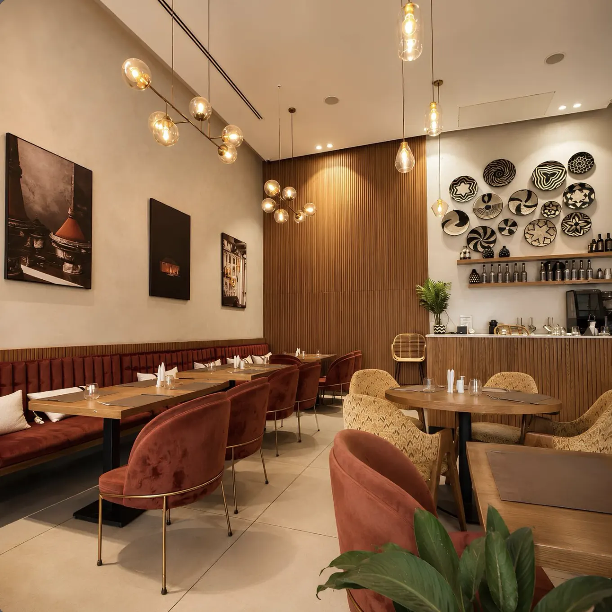
Tous les jours, 8h à 23h
22 Rue Ibn Toumert, Gueliz
Du matin jusqu'au dernier tajine.
Café, brunch et cuisine marocaine et méditerranéenne, au cœur de Gueliz.
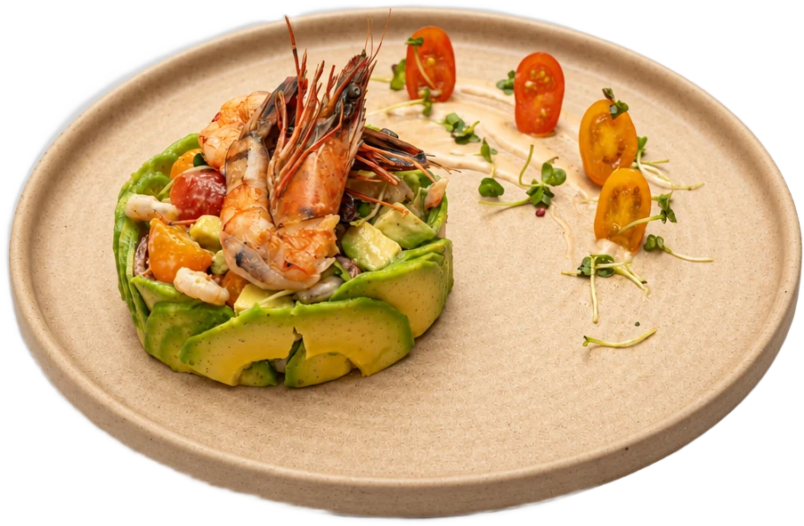
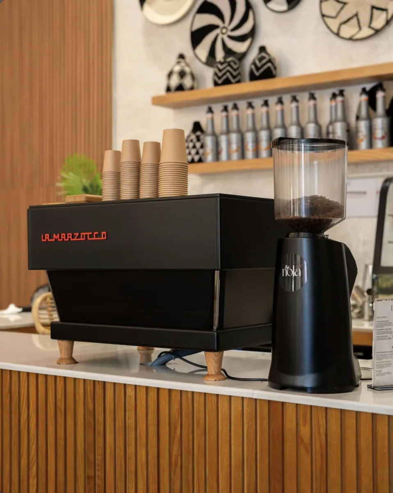
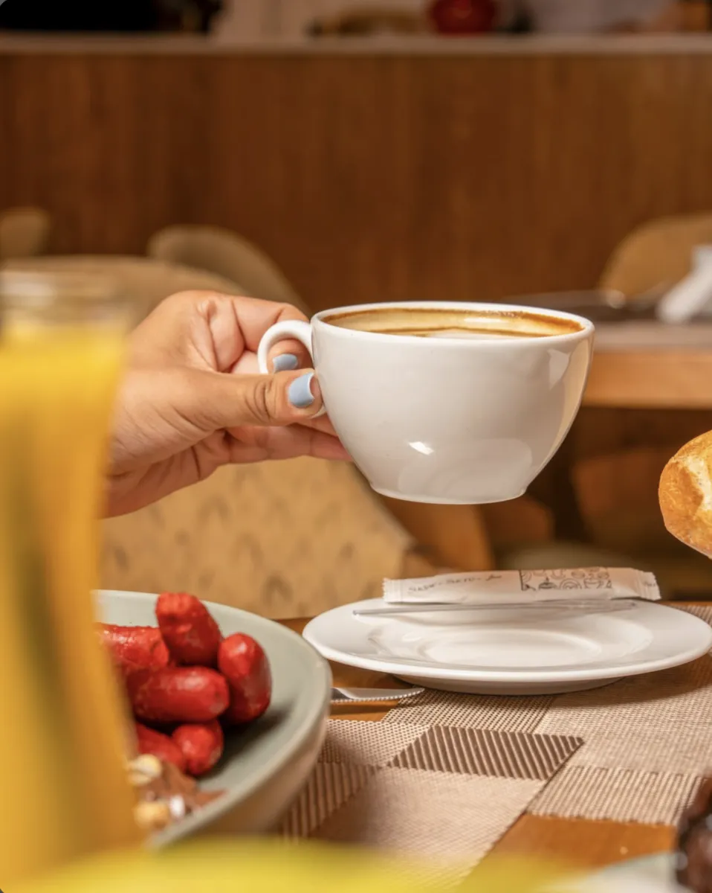
On ouvre, la machine chauffe.
Un espresso au comptoir, un cappuccino sur la banquette, un jus pressé avant le travail. Le matin chez Lumi commence doucement, sous les paniers tressés.
- Espresso
- Cappuccino
- Flat white
- Iced coffee
- Milkshake
« Mon endroit préféré pour démarrer la journée. Café parfait, et un accueil qui donne envie de revenir. »
Karim A., avis Google (traduit de l'anglais)
Une table qui déborde.
Granola, fruits frais, pancakes, œufs, viennoiseries, chocolat chaud qui coule. Le brunch se partage, ou pas.
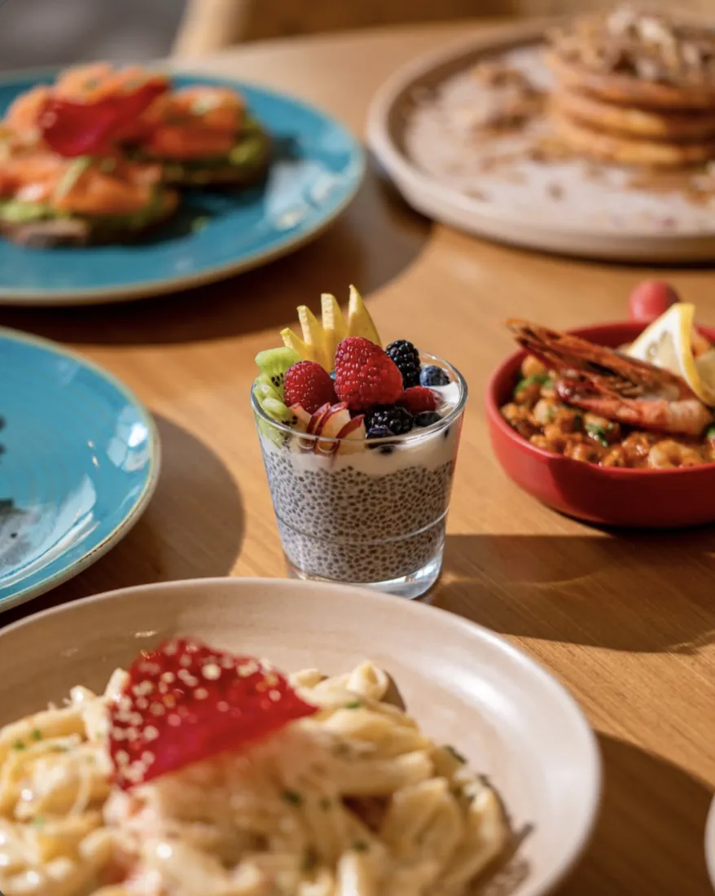
La grande table
Pancakes, chia pudding, fruits rouges, crevettes.
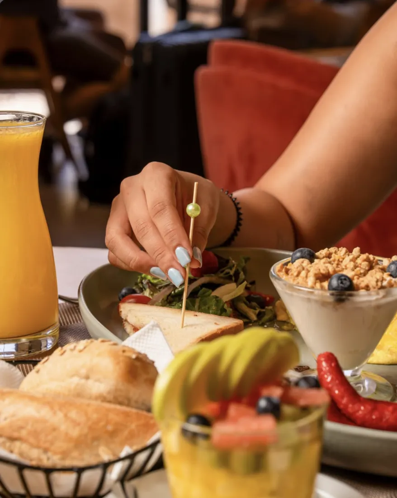
Le complet
Granola yaourt, salade, saucisses, pain, jus d'orange.
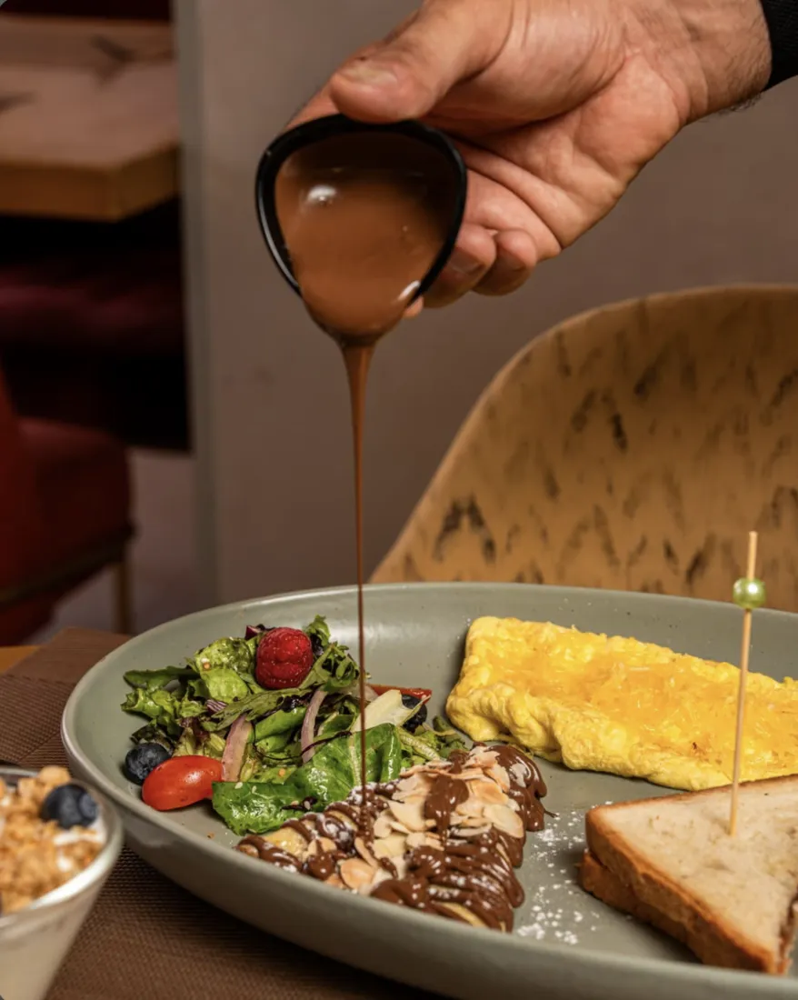
La touche finale
Omelette, salade, crêpe nappée de chocolat et amandes.
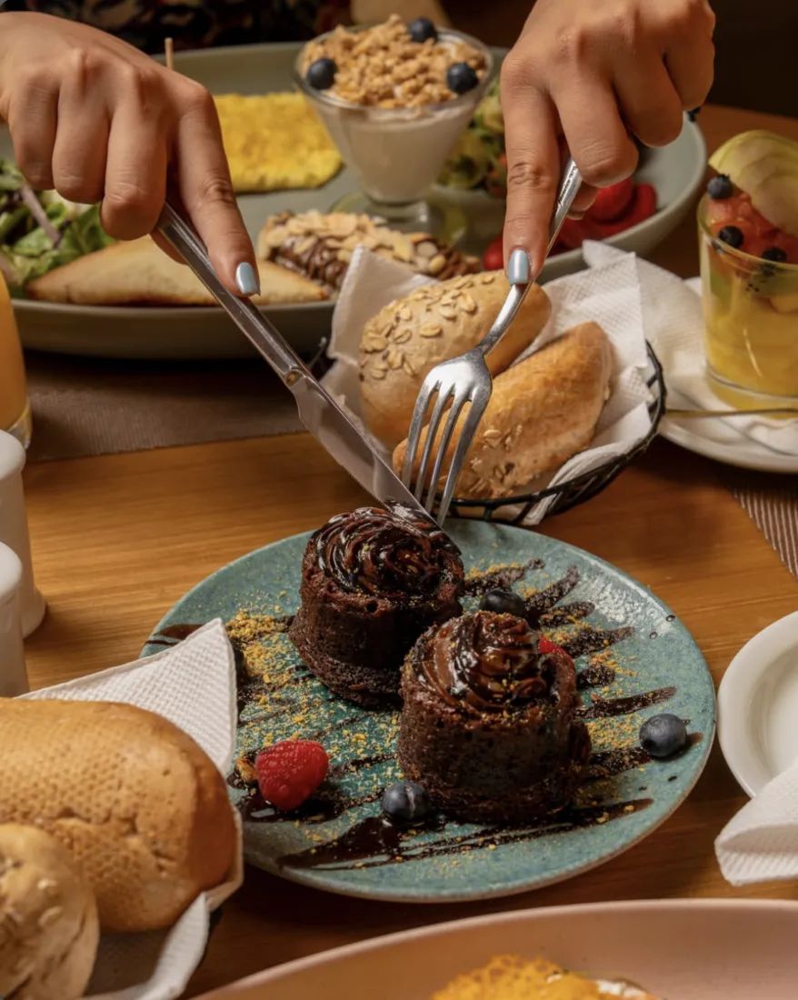
Fondants
Au chocolat, à deux fourchettes.
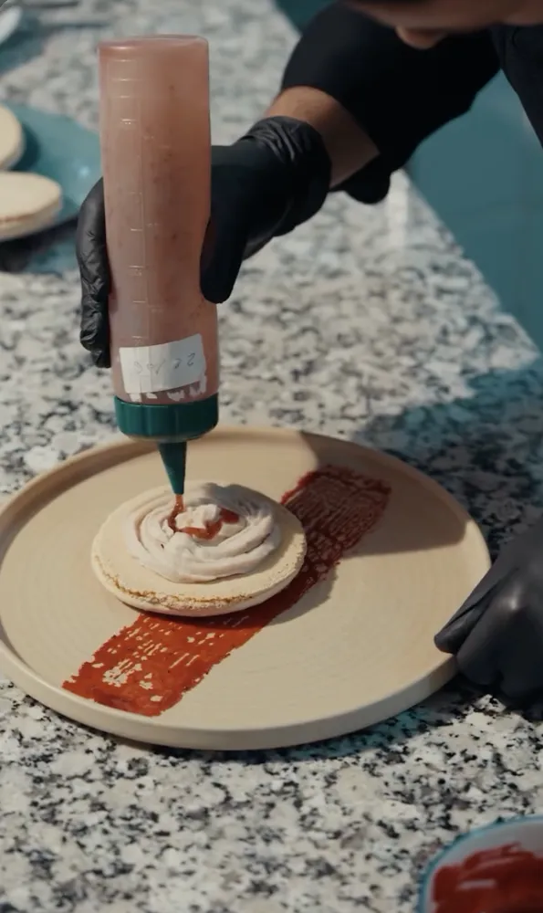
Fait ici
Dressé en cuisine, assiette par assiette.
Pas le temps de s'asseoir ? Le brunch arrive aussi chez vous.
Commander sur GlovoLe Maroc d'un côté, la Méditerranée de l'autre.
Les classiques de la maison, préparés comme à la maison, et des assiettes plus légères pour ceux qui retournent travailler.
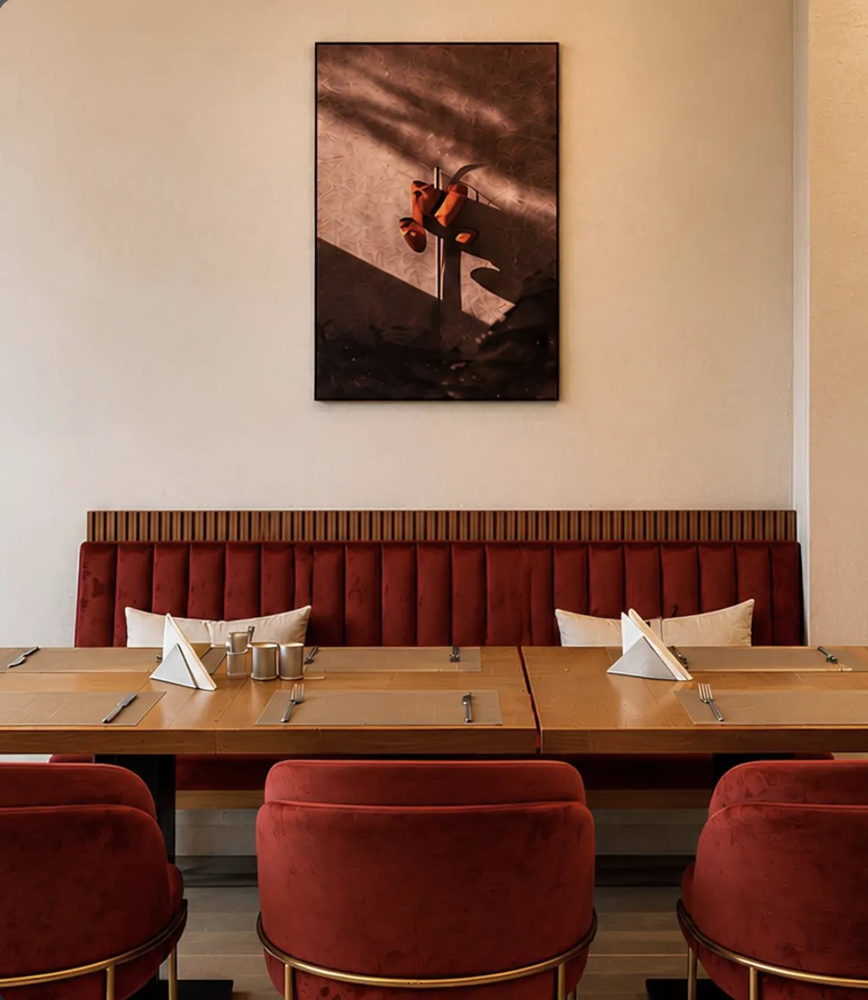
Côté Maroc
- Tajine aux boulettesLe plat que nos clients recommandent
- Tanjia
- Couscous royal
- Pastilla au poulet et amandes
- Tajine de souris d'agneau
Côté Méditerranée
- Avocat & crevettesTomates cerises, jeunes pousses
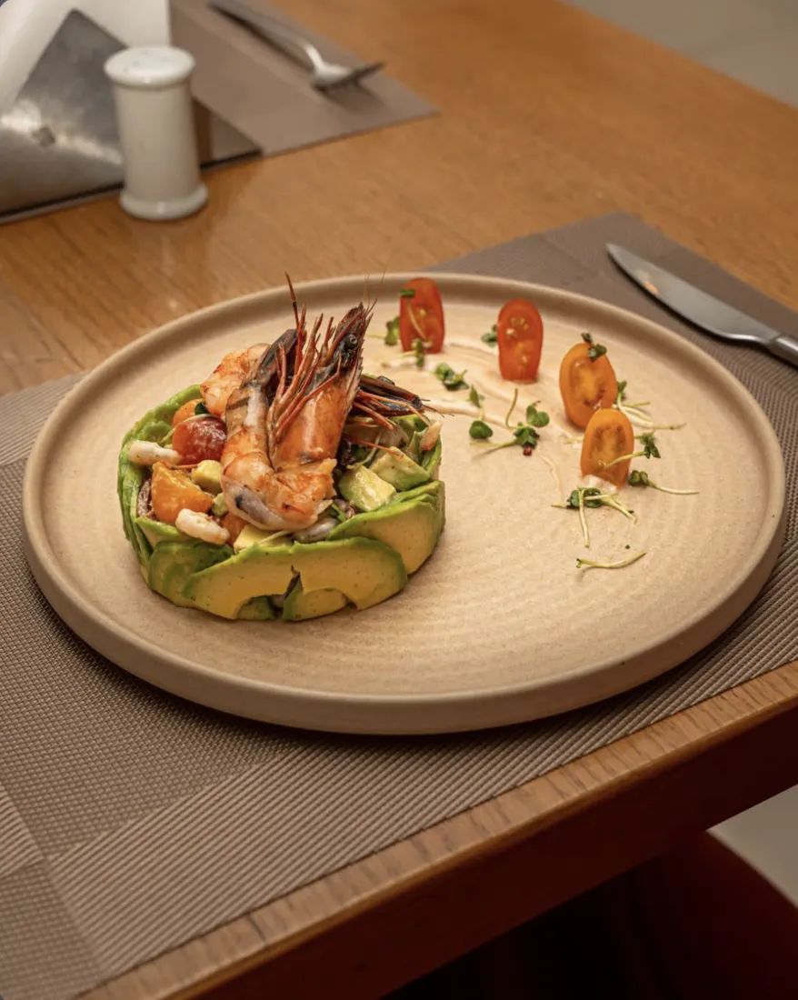
- Penne à la tomateTuile de parmesan
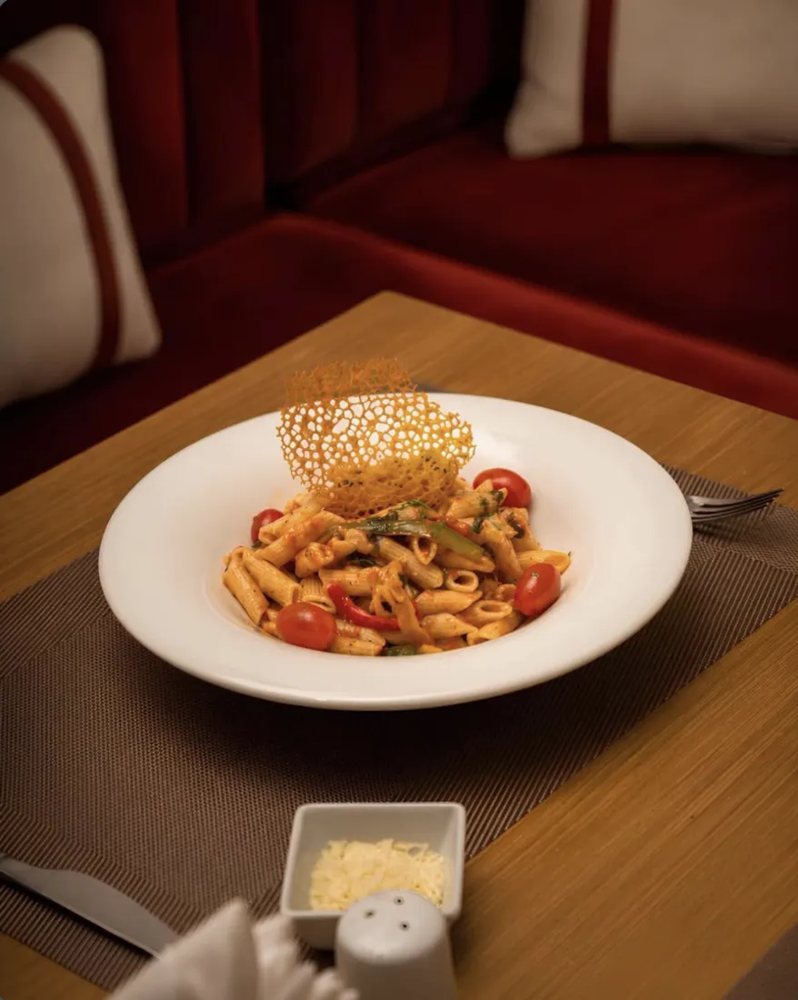
- Croquettes doréesSauce maison
- Poulet, sauce crémeuseLégumes et riz
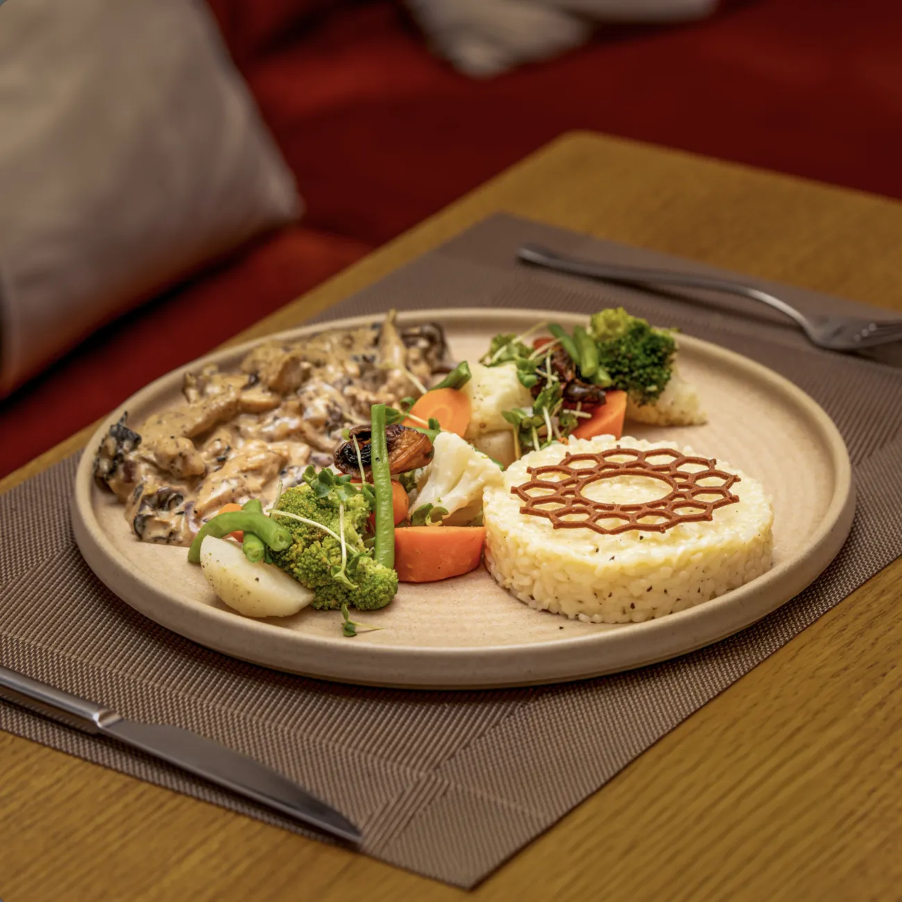
Un aperçu de la carte. Demandez la carte du jour sur place ou par téléphone.
4,7
sur 5, avis Google
« Aussi bon que beau. Service aux petits soins du début à la fin, goûtez le tajine aux boulettes ! »
Julia R., avis Google (traduit de l'anglais)
« Des assiettes superbes, mention spéciale pour la pastilla. »
Omar T., avis Google (traduit de l'anglais)
Quelque chose de frais.
Agrumes, menthe, fruits exotiques. Le soleil baisse sur le boulevard.
Le soleil se couche sur Gueliz.
Et les lampes s'allument.
La salle se remplit.
Le dîner est servi jusqu'à 23h, tous les soirs.
Votre table vous attend.
Pour un café à 8h ou un tajine à 21h, appelez-nous et on vous garde une place.
- Adresse
- 22 Rue Ibn Toumert
Gueliz, Marrakech 40000 - Horaires
- Tous les jours
8h à 23h